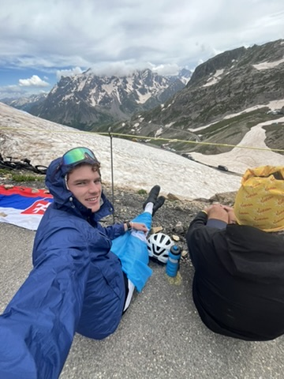

about me



Hey! Luke here.
Idk what makes a person who they are, but it's definitely not a shiny list of all the cool and impressive stuff they've done. Because that only lets you know what they've done, but not who they are.
Anyways, I'm a curious guy and have a handful of interests across the smorgasbord. Here's a list of my maybe shiny maybe cool and impressive interests equally likely to be deemed as silly.
Meat and cheese:
- I’m a recent Middlebury College graduate and current developer at Epic Systems (no, not the fortnite company).
- I’m motivated by how technological innovations, like those I’ve explored in cardiology research, can transform care for diverse and prevalent populations such as veterans and others with complex physical and mental health needs, especially those dealing with heart conditions.
- More particularly, I’m interested in the intersection of informatics, novel technology and patient care, and how these tools can be leveraged to create more personalized, accessible, and effective treatments. I believe we can empower both patients and healthcare providers to make informed decisions, ultimately improving outcomes and enhancing quality of life for individuals facing significant health challenges.
The crackers, etc (some people think they're less important, but without them, it's not a smorgasbord):
- Running / Biking - Ran cross country / track at Middlebury, want to get into cycling but my old man says it's too dangerous
- Reading / Writing - Fantasy, non-fiction, sci-fi, anything
- Guitar - Not yet as good as guitar george (he knows all the chords)
- Sunrises - Superior to sunsets
- Mountains - Currently substituting with lakes
- Dogs - Any
- New (and surprise) development, but black coffee
If you're interested, ping my email!